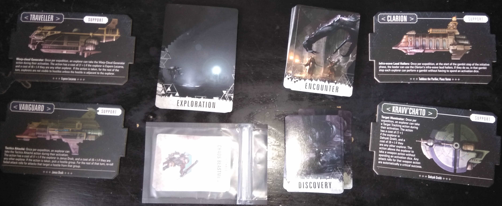

Blackstone Rulebook
What follows is my attempt to transcribe and annotate the various rules for Blackstone Fortress which we/I hope to use and enjoy.
So far, this includes rules from;
- Warhammer Quest: Blackstone Fortress (the core set)
… and some corrections from the FaceBook group who tend to be lovely and non-spammy.
Setup
“Setup” isn’t too hard … once you’ve done it. You get out all the parts you’ll use for your expedition and plop them on the table.
I’ve generally found that 24x36 inch table is a bit cramped, but, safe for all the bits, dice, and inevitable snacks. I also like using a solid colour blanket as a tablecloth to make the board easier to look at.
Explorers
Players select four1 explorer cards and take their minis out, and the ships cards for these explorers. If there are less than four spaceships - players pick whatever ships they want until they have four. Finally, the explorers can trade any cards the heroes are carrying2 before placing their miniatures on one of the MagLev tiles and somewhere on the table.3
Decks
Decks are (ostensibly) setup slightly differently depending upon the Expedition’s goals. All variants require the Discovery deck of archotech and clues, the Encounter deck of monsters with their Hostile Reference cards, and any “Fortress Upgrade” legacy cards that have been activated.
Expedition (for Clue cards)
This is the “generic” game where the Explorers are trying to find clues that will lead them to a “Hidden Vault” within the fortress. Shuffle each of the two big “Exploration” decks and draw four cards from each, then shuffle those eight cards together. This creates a deck with four “Combat” cards and four “Challenge” cards which will be a surprise to all players.

strongholds
TODO;
https://www.facebook.com/groups/BlackStoneFortress/permalink/376939139626815/
Expedition
The trading of cards and recovery of wounds is limited to the Recovery Phase.
Exploration Stage (draw a card)
Durring the Exploration Stage a single Exploration card is drawn and resolved before progressing to the Recovery Stage. The card will either be a Challenge Card, which may involve combat, or a Combat Card which may involve an “Ambush” or other “Twist” to the rules.
Exploration Challenge Card
challenge cards have rules written on them and are generally delightful
Exploration Combat Card
combat cards are hard
there’s a whole book to deal with it
four wounds doesn’t kill you, five does4:
setup
- setup the battlefield according to the card
- check for big obvious features on the diagrams and then the tiles
- “count” along the edges if you’re having trouble
- plkace discovery markers
- draw encounter cards, grab those minis and place them
- if you’re out of the minis; wee - no baddies
- if you draw a “twist” for that encounter - leave the marker in place for looting
- ensure that the explorers are eitehr in the MagLev transport, or, on the “A” marked squares
fight
Destiny Phase
- roll the five black d6
- discard any non-unique dice
Initiative Phase
Activation Rolls
- roll a (white d6) Activation Dice for each empty square on the explorer’s card and store it there
- these are “pre rolled” dice that the explorer can attempt various actions with
- if the explorer takes a wound, choose a die to remove and replace with a (grievous or non-grievous) wound markler
Initiative Deals
- shuffle and deal out the initivate cards
- iff this is the first turn of an ambush
- move the hostiles up to come first
Covering Fire
- each explorer may swap initivate places once with another explorer iff they have LoS to that explorer
Gambits
- in leader’s chosen orders; explorers may spend a die to attempot an Agility Check to swap with a hostile
| Roll | Result | |
|---|---|---|
| Failure | Nothing happens | |
| ^ | Success | Explorer chooses to swap with the closest left or the closest right Hostile Group’s Initiave Card on the Initiave Track |
| ^ ^ | Critical Success | Explorer chooses any Hostile Group’s Initiave Card to swap places with |
Actiovation Phase
- ???
(Explorer) Actions
Exploreros may spend any number of thier (white d6) Activation Dice and up to two (black d6) Desitny Dice5 to perform the actions on the “Support” side of the ships, the actions on their cards, or one of the Basic Actions below. Any unspent dice are used for Overwatch
| d6 | Name | Details |
|---|---|---|
| 1+ | Aiming | The next weapon action durring this activation ignores cover. |
| 1+ | Move | Move up to the “move value” hexes. If a minature enters a hex adjacent to an enemy model, then, movement stops. Models may not move through hexes occupied by enemies, but, may move through “full” hexes with allies. |
| 1+ | Recuperate | Make a “Vitality Check” to remove one (success) or two (critical success) non-grievous wound counters.6 |
| 4+ | Search | Cannot be taken when enemioes are adjacent. (consume discovery marker) or (spend three inspiration tokens) -> gain a Discovery Card |
| 4+ | Summon | Replace an adjacent Portal with a MagLev Chamber. Can only be done once per combat. |
(Explorer) Overwatch Weapon Actions
Reduce each unspent (white d6) Activation Die by 1, discardind dice with a value of 1. When a visible hostile deploys, finishes a move or finishes an attack7 - any number of explorers may declare an overwatch Weapon Action. Each explorer perfoms a Weapon Action8 and spends a saved (white d6) Overwatch Die. If the hostile has slain - the remaining Overwatch explorers still discard a (white d6) Overwatch Die.
(Explorer) Inspiration Roll
???
clean
- ???
Recovery Stage
After resolving an Exploration card, one follows these steps before
- roll a “Recovery Check” for any exploer who is out of action
- roll the d20
- if it’s less than the number of “Grievous Wounds” on the Explorer’s card; the explorer is “dead”
- give the explorer a “Mortis” card
- the explorer may not trade or act anymore9
- if any explorers (now) have a Mortis card; the expedition returns to Precipice
- do up to one Recuperate action per Explorer
- it feels odd that the Explorers can’t recover ALL non-Grievous Wounds … so … let’s say that they’re rushing to get in and out before the Fortress can get them
Leader Stage
now (after dead checks) leader marker is passed clockwise and explorers can give eachother treasure cards
next, if … - no exploration cqards left - all players agree to go home - all explorers were out of action - even if any are not dead now - any exporer died
… the expedition is over return to Precipice
Precipice
explorers can swap any cards thatthe explorers wish to swap at any time on precipce
legacy
Draw a Legacy Card from the Legacy Deck and deal with it, then place it in the “data chamber” pounch - if no leg cards left; explorers have failed - rest the game - if it’s a “COuntdown” card; do nothing other than place it there - if it adds hostiles; add them - if it’s a fortress upgrade; do nothing … for now
trading / facilities
- flip the four spacecraft you have to the “support” sides
- shuffle the matching “Resource Deck” and deal (up to) three “Resource Cards” for each ship
- if the matching Resource Deck has <3 cards; deal what you can
- for each explorer, inb leader order;
- choose a ship to visit and place the mini on that ship
- resolve or ignore the facilities
- most facilities seem to allow the owner to re-roll
- buy any Resouces you wish
- use the archotech card’s “trade point” value to pay
- if the explorer owns the ship; they get 1 free trade-point
- if an explorer has more than 10 (non mortis) cards; they now discard down to 10
- after all exploreres have take turns; return the unused Resource and Discovery cards to their decks
- “The Ratling Twins” count as one explorer … which is why they’re awesome. [return]
- Trading cards during play is somewhat limited during play, but, can be done freely before playing and in between Exploration cards. [return]
- Placing the Explorers on a MagLev tile at the start is somewhat redundant, but, has a nice sense of “we’re ready.” [return]
- https://www.facebook.com/groups/BlackStoneFortress/permalink/374907963163266/?comment_id=374914796495916 [return]
- https://www.facebook.com/groups/BlackStoneFortress/permalink/374907963163266/?comment_id=374959873158075 [return]
- UR025’s rules for wounds are different; use them whenever relevant. [return]
It’s unclkear to me what happens when a hostile performs multiple “moves or attacks” durring their activation. I’m going to assume that allows multiple opportunites to Trigger Overwatch
[return]- Not a Unique Action or a Basic Action [return]
- One of the ships can resurrect explorers durring the Precipice stage. [return]